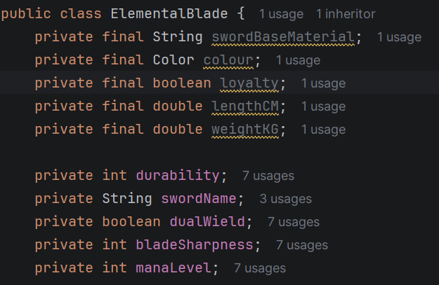
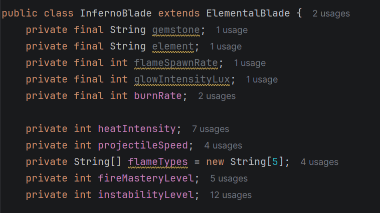

Assignment Intro
Unit 2 of OOP was mostly about inheritance while polymorphism was briefly touched upon. In this unit, our Fantastical Invention Assignment was the most important as we learned how classes can inherit from others. For our assignment, we made an elemental blade that one can attack with which we extended to another class called inferno blade. Between the two classes we had 10 differing variables and methods.


Programming Concept
The concept of inheritance is a little harder to understand but not overly difficult. Inheritance allows a class called subclass which is a branch off of another overarching class called the superclass. The subclass can inherit the fields and methods of the superclass. This can only be done by using the keyword "extends" as shown in my code snippet above.
Challenges
Other than the idea generation of the inheritance topic, we struggled to come up with the 10 required variables per class. This was also the first time any of my group had used "final" variables which was a concept that was surprisingly a little hard to grasp.
Solutions
For the "final" variables problem, we took some time to read through our notes and experiment with them in our IDE. After a bunch of trial and error we realized that they were just constants that couldn't be changed after initialization. Other than that there weren't any other major problems.
Reflection
Overall, the concept of inheritance is pretty easy to grasp once you try it on your own and it can also be very useful as you can carry over methods and variables without having to re-type, declare and initialize them.